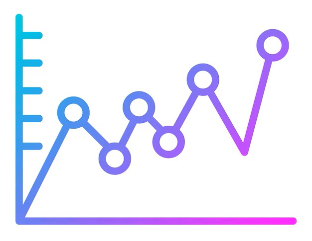
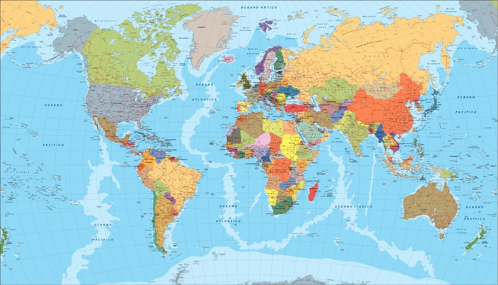
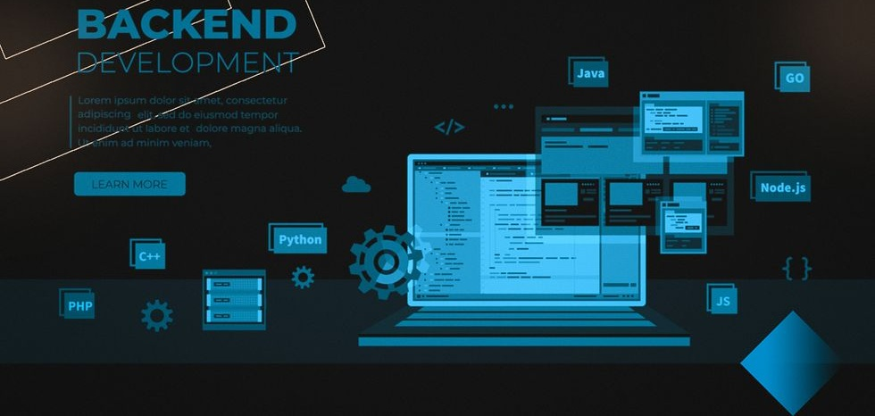
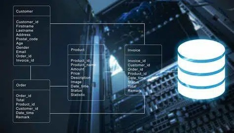

1. Fundamentos esenciales
- HTML5
- CSS3
- JavaScript
Perfil profesional
Con una trayectoria de décadas desarrollando soluciones integrales, lidero equipos y proyectos abarcando todas las fases del ciclo de desarrollo: análisis, arquitectura, diseño, programación, pruebas, documentación, despliegue y mantenimiento. Domino tanto el frontend (HTML, CSS, JavaScript) como el backend (PHP, APIs REST) y la gestión de bases de datos en SQL Server, MySQL, MariaDB y SQLite. Mi experiencia incluye dirección técnica, coordinación multidisciplinaria, diseño de modelos de datos, integración de sistemas, elaboración de informes, testing funcional, detección y corrección de errores, así como la implementación en hosting y servidores empresariales. Esta visión completa me permite comprender cada capa de un proyecto y construir plataformas robustas, escalables y eficientes, garantizando resultados estables de principio a fin.
Full Stack Developer
Actualmente, Castellón, España
Apasionado de la tecnología desde joven, con más de 40 años de experiencia liderando equipos y construyendo sistemas de alto rendimiento, mantenibles y de alta calidad en diversas empresas e instituciones privadas.
En 1980 con 18 años descubrí mi pasión por la programación al comenzar a estudiar la carrera de Ingenieria y recibir una asignatura de introduccion a la programación usando lenguaje FORTRAN, trabaje con tarjetas perforadas y enormes computadoras que ocupaban salas enteras.
Aquella experiencia temprana marcó mi vida profesional: desde entonces no he dejado de aprender, evolucionar y disfrutar cada nueva tecnología que ha ido apareciendo.
A lo largo de más de 40 años he trabajado con una amplia variedad de lenguajes de programación empezando con FORTRAN y continuando con: Basic, Visual Basic, Pascal, Turbo Pascal, Delphi, C, C++, C#, Kotlin, Swift, ASP Clasico (con VBscript), PHP, JavaScript y TypeScript.
He estado involucrado en el desarrollo de mas de 100 software para escritorio, intranets, extranets y apps para móviles Android.
He trabajado en proyectos en mas de 5 paises de conjunto con otros especialistas en áreas como diseño gráfico, marketing digital, SEO, UX/UI, gestión de proyectos, administración de sistemas, programación y diseño e implementacion de bases de datos.
He enfrentado el desarrollo de más de 10 portales web en varios idiomas, siempre con la misma motivación: crear soluciones útiles, estables y bien construidas.
Durante mi carrera profesional he trabajado con mas de 30 empresas en varios países, lo que me ha permitido adquirir una amplia experiencia en el desarrollo de soluciones tecnológicas innovadoras.




Un recorrido profesional marcado por la innovación tecnológica, la arquitectura de software y el liderazgo estratégico.
Liderando la transformación DevOps en una empresa suiza especializada en soluciones de viaje con IA, optimizando infraestructuras, pipelines CI/CD y sistemas de monitoreo.
Desarrollo de soluciones tecnológicas avanzadas y liderazgo de proyectos de software desde una perspectiva híbrida en Badajoz, Extremadura.
Gestión de arquitectura de proyectos (backend, frontend, base de datos, infraestructura, CI/CD) y liderazgo de un equipo de 4 personas con metodologías ágiles.
Universidad de Extremadura
Especialización en desarrollo de software, arquitecturas distribuidas y metodologías de investigación aplicada.
Universidad de Extremadura
Formación integral en ingeniería de software y participación activa en liderazgo estudiantil y proyectos colaborativos.
Estoy aquí para ayudarte con tu próximo proyecto.